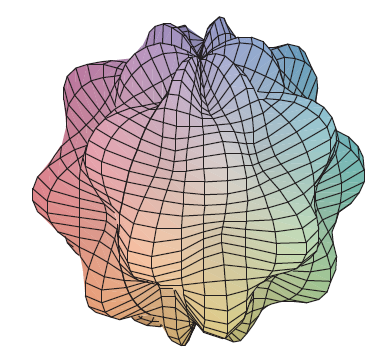

The surfaces \(\rho = 1 + \frac{1}{5}\sin(m\theta)\sin(n\phi)\) have been used as models for tumors. The “bumpy sphere” with \(m=6\) and \(n=5\) is shown. Use a computer algebra system to find the volume it encloses.
